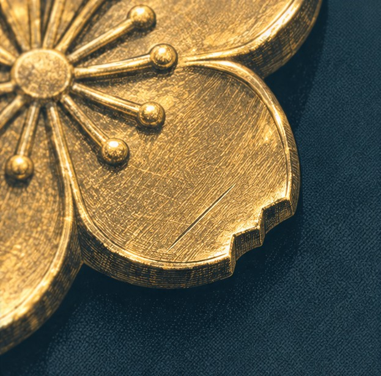
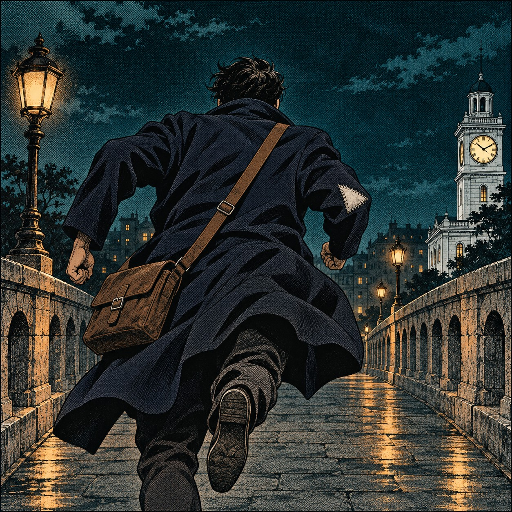
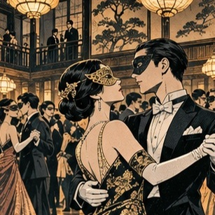
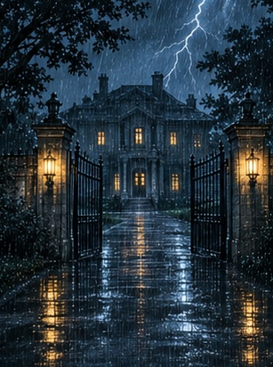
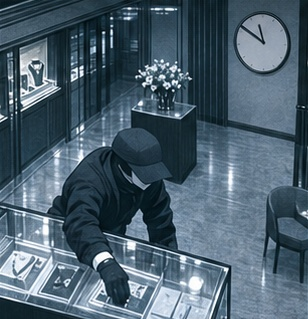
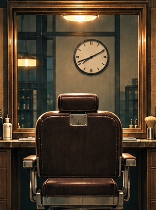
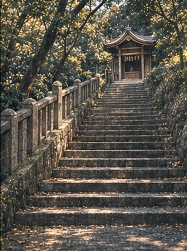
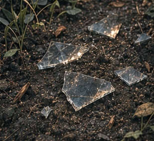
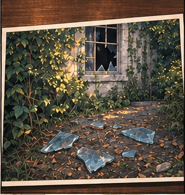
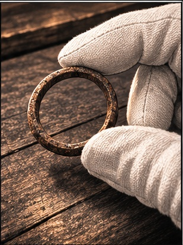

連載ミステリー漫画
赤い糸の先
一枚しかないはずの傷が、別の事件にも残っていた。
「未解決ファイル」に掲載しているミステリークイズをつなぎ合わせ、ひとつの物語に仕立てた連載漫画です。
第1話を読む古道具屋から消えた一つの壺を追ううちに、水城と朝倉は、別々の事件の写真に同じ傷や見覚えのある光景が写り込んでいることに気づきます。
目撃証言、手紙、防犯映像。何が写り、何が記録から抜け落ちたのか。二人は残された証拠を一つずつ読み直し、事件を結ぶ赤い糸をたどります。
エピソード
 第1話橋へ向かった男青い葉の模様がある壺が消えた。橋へ向かった男の写真を手に、水城と朝倉は・・・・・
第1話橋へ向かった男青い葉の模様がある壺が消えた。橋へ向かった男の写真を手に、水城と朝倉は・・・・・ 第2話半額セールの買い付け半額セールで買った記念メダル。支払った金額と届いた枚数を、売り場の写真で照らすと・・・・・
第2話半額セールの買い付け半額セールで買った記念メダル。支払った金額と届いた枚数を、売り場の写真で照らすと・・・・・ 第3話蔵の市の壺と四通の鑑定書消えた壺に似た品が古物市場に。添えられた四通の鑑定書を一枚ずつ確かめると・・・・・
第3話蔵の市の壺と四通の鑑定書消えた壺に似た品が古物市場に。添えられた四通の鑑定書を一枚ずつ確かめると・・・・・
第4話同じ傷別件の押収品に、収集家のものとよく似たメダルが。瀬尾が縁の傷を照らし合わせると・・・・・
第5話三枚目の後ろ姿売り場、橋、古物市場。三枚の写真に写る後ろ姿に、朝倉は同じ特徴を見つけるが・・・・・ 第6話野鳥園への予告状野鳥園に、一羽を盗むという予告状。狙われた鳥の名は手紙の一行に隠れていて・・・・・
第6話野鳥園への予告状野鳥園に、一羽を盗むという予告状。狙われた鳥の名は手紙の一行に隠れていて・・・・・
第7話予告状の消印仮面舞踏会の翌朝、屋敷に犯行予告が届く。消印と舞踏会の日付を照らすと・・・・・
第8話黒い紙の継ぎ目別々の事件に残った黒い封。朝倉が紙片の並びを変え、途切れた傷の線を追うと・・・・・ 第9話二度降った雨別の日付なのによく似た雨の写真。水城は赤い傘だけでなく、水しぶきにも目を留め・・・・・
第9話二度降った雨別の日付なのによく似た雨の写真。水城は赤い傘だけでなく、水しぶきにも目を留め・・・・・
第10話七分進んだカメラ宝石店の防犯映像には、二つの時計があった。表示時刻と店内の壁時計を比べると・・・・・
第11話鏡の中の八時二十分理髪椅子に座ったまま時計を見たという沢村。そのとき椅子が向いていたのは・・・・・ 第12話二度目の訂正訂正済みの時刻が、配布資料でもう一度変わっていた。元の記録からたどり直すと・・・・・
第12話二度目の訂正訂正済みの時刻が、配布資料でもう一度変わっていた。元の記録からたどり直すと・・・・・ 第13話閉じた扉のチェーンチェーンが掛かった扉。切れた輪ゴムと金具脇の傷を手掛かりに、当時の検証を読むと・・・・・
第13話閉じた扉のチェーンチェーンが掛かった扉。切れた輪ゴムと金具脇の傷を手掛かりに、当時の検証を読むと・・・・・ 第14話水の跡が残った密室発見時に濡れていたはずの床が、配布写真に写っていない。水城が撮影順をたどると・・・・・
第14話水の跡が残った密室発見時に濡れていたはずの床が、配布写真に写っていない。水城が撮影順をたどると・・・・・
第15話峠の社の石段峠の社の石段で岡部が転落。賽銭箱と手すりの指紋が示す足取りを、元写真で追うと・・・・・
第16話外に散らばったガラス外からの侵入と見られた割れ窓。庭に散った破片と、現場に残された鍵の状態は・・・・・
第17話写真に残らなかったもの最終報告に添えられた一枚の写真。朝倉が報告書を読み直すと、ある情報が抜けていて・・・・・
第18話発見時「発見時」と題された写真には、すでに持ち上げられた鉄の輪が。撮影順を確かめると・・・・・- 第19話捜査ボードの結末に関わるエピソード写真に写った部屋を探す水城と朝倉。よく似た二つの記録を見比べると・・・・・
- 最終話捜査ボードの結末に関わるエピソード集めてきた記録を手に、水城と朝倉は最終報告を読み直す。最後に二人が確かめるのは・・・・・